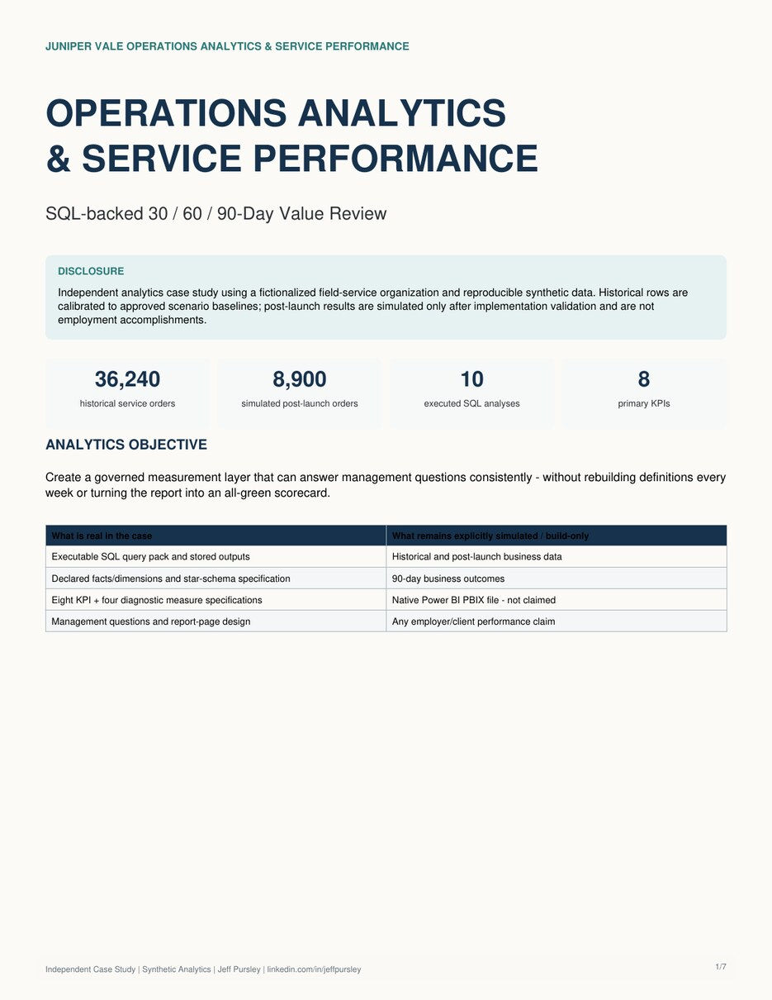

Query Pack
Ten queries cover KPI summary, route-change drivers, assignment errors, inventory delay, closeout, follow-up, capacity, re-service, reporting effort, and the 90-day action list.
SQLOpen SQLIndependent simulation | Operations Analytics
I built a synthetic 90-day review using eight KPI definitions, ten executable SQL analyses and modeled 30/60/90-day decisions. It shows how consistent performance measures expose problems in capacity, quality and follow-through.
The analysis uses consistent data grain and KPI rules so managers do not rebuild the same numbers differently each week.

Ten queries cover KPI summary, route-change drivers, assignment errors, inventory delay, closeout, follow-up, capacity, re-service, reporting effort, and the 90-day action list.
SQLOpen SQLThe workbook defines table grain, relationships, KPI/DAX measures, management questions, and six report pages.
XLSXDownload workbookI published a deterministic 1,800-order synthetic excerpt with matching appointments, dimensions, ten SQL queries, saved outputs and a Python verifier. I executed the script against this excerpt; all ten query outputs matched. Because the download is a subset, it does not reproduce the full-scenario 30/60/90 KPI percentages.
Download dataset and verification package (ZIP)
The reproducible dataset uses synthetic service records; the reporting model and measures are documented in the companion workbook.
In the modeled 90-day review, five of eight KPIs met target. Three missed. I would investigate the causes before proposing more changes.
Target: 7.5% or less. The scenario slipped from 7.4% at 60 days. Customer requests, urgent insertions, absences and overruns appear in the modeled change-reason analysis. I would compare those drivers by territory before changing dispatch rules.
Target: 96%. The remaining gap is narrow. I would look at missing-field reasons and service types, then reinforce the specific completion steps rather than adding more fields for every technician.
Target: 1.5 hours or less. Manual validation and exception review still take time. I would separate repetitive reconciliation from management checks that should remain human decisions.
The purpose of this review is not to make every metric green. It is to show what I would investigate next and why.
The 30/60/90-day review is a modeled management scenario supported by executable SQL, a reproducible sample and a reporting-model specification.
Reproducible scenario expansion
The Enterprise Transformation Command Center adds a separate versioned dataset and active scenario calculations to the original SQL analytics work. The earlier sample and its historical metrics are preserved.
Explore calculated financial scenarios